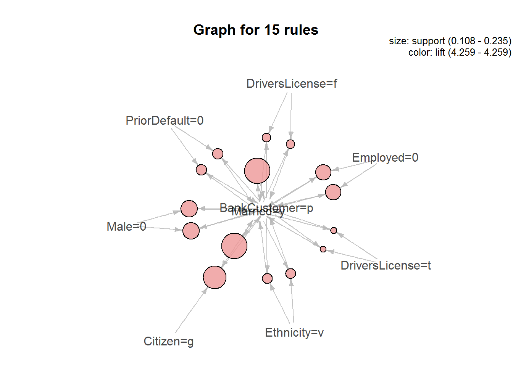

The purpose of this analysis is to demonstrate the analytical techniques learned in the Special Topics in Audit Analytics course offered by Rutgers University. I will use the Credit Approval Dataset which is a collection of credit card applications and the credit approval decisions. The data is available from the UCI Machine Learning Repository. The techniques include data visualization, association rules, logistical regression, and decision trees. This analysis is organized as follows:
This analysis demonstrates several analytic techniques to examine one company’s decision to approve or deny credit card applications. The final model created out of this analysis is a combination of a logarithmic regression model and classification and regression tree (CART) model. This model was able to predict the outcome of a credit applications with 84% accuracy which was significantly better performance than the baseline model.
Through the model we can understand that there are four affect the approval decision while others have no impact. The four factors all positively affect the outcome and that as these factors increase, so does the probability that a credit card will be issued.
The four influencing factors are:
Other variables such as age, sex, or ethnicity did not have an influence on whether the application was denied. A Chi Squared test for independence validated our conclusion Ethnicity and Approval status are independent.
The first step in any analysis is to obtain the dataset and codebook. Both the dataset and the codebook can be downloaded for free from the UCI website. A quick review of the codebook shows that all of the values in the dataset have been converted to meaningless symbols to protect the confidentiality of the data. This will still suit our purposes as a demonstration dataset since we are not using the data to develop actual credit screening criteria. However, to make it easier to work with the dataset, I gave the variables working names based on the type of data.
Once the dataset is loaded, we’ll use the str() function to quickly understand the type of data in the dataset. This function only shows the first few values for each column so there may be surprises deeper in the data but it’s a good start. Here you can see the names assigned to the variables. The first 15 variables are the credit application attributes. The Approved variable is the credit approval status and target value.
Using the output below, we can see that the outcome values in Approved are ‘+’ or ‘-’ for whether credit had been granted or not. These character symbols aren’t meaningful as is so will need to be transformed. Turning the ‘+’ to a ‘1’ and the ‘-’ to a ‘0’ will help with classification and logistic regression models later in the analysis.
## 'data.frame': 689 obs. of 16 variables:
## $ Male : num 1 1 0 0 0 0 1 0 0 0 ...
## $ Age : chr "58.67" "24.50" "27.83" "20.17" ...
## $ Debt : num 4.46 0.5 1.54 5.62 4 ...
## $ Married : chr "u" "u" "u" "u" ...
## $ BankCustomer : chr "g" "g" "g" "g" ...
## $ EducationLevel: chr "q" "q" "w" "w" ...
## $ Ethnicity : chr "h" "h" "v" "v" ...
## $ YearsEmployed : num 3.04 1.5 3.75 1.71 2.5 ...
## $ PriorDefault : num 1 1 1 1 1 1 1 1 1 0 ...
## $ Employed : num 1 0 1 0 0 0 0 0 0 0 ...
## $ CreditScore : num 6 0 5 0 0 0 0 0 0 0 ...
## $ DriversLicense: chr "f" "f" "t" "f" ...
## $ Citizen : chr "g" "g" "g" "s" ...
## $ ZipCode : chr "00043" "00280" "00100" "00120" ...
## $ Income : num 560 824 3 0 0 ...
## $ Approved : chr "+" "+" "+" "+" ...As previously mentioned the binary values, such as Approved, need to be converted to 1s and 0s. We’ll need to do additional transformations such as filling in missing values. That process begins by first identifying which values are missing and then determining the best way to address them. We can remove them, zero them out, or estimate a plug value. A scan through the dataset shows that missing values are labeled with ‘?’. For each variable, we’ll convert the missing values to NA which R will interpret differently than a character value.
To start with, we will use the summary() function to see the descriptive statistics of the numeric values such as min, max, mean, and median. The range is the difference between the minimum and maximum values and can be calculated from the summary() output. For the B variable, the range is 66.5 and the standard deviation is 11.9667.
## Age Debt YearsEmployed CreditScore Income
## Min. :13.75 Min. : 0.000 Min. : 0.000 Min. : 0.000 Min. : 0
## 1st Qu.:22.58 1st Qu.: 1.000 1st Qu.: 0.165 1st Qu.: 0.000 1st Qu.: 0
## Median :28.42 Median : 2.750 Median : 1.000 Median : 0.000 Median : 5
## Mean :31.57 Mean : 4.766 Mean : 2.225 Mean : 2.402 Mean : 1019
## 3rd Qu.:38.25 3rd Qu.: 7.250 3rd Qu.: 2.625 3rd Qu.: 3.000 3rd Qu.: 396
## Max. :80.25 Max. :28.000 Max. :28.500 Max. :67.000 Max. :100000
## NA's :12## [1] 11.9667Missing Values
We can see from the summary output that the Debt variable has missing values that we’ll have to fill in. We could simply use the mean of all the existing values to do so. Another method would be to check the relationship among the numeric values and use a linear regression to fill them in. The table below shows the correlation between all of the variables. The diagonal correlation values equal 1.000 because each variable is perfectly correlated with itself. To read the table, we will look at the data by rows. The largest value in the first row is 0.396 meaning age is most closely correlated with YearsEmployed. Similarly, Debt is mostly correlated with YearsEmployed.
## Age Debt YearsEmployed CreditScore Income
## Age 1.000 0.202 0.396 0.186 0.019
## Debt 0.202 1.000 0.301 0.271 0.122
## YearsEmployed 0.396 0.301 1.000 0.327 0.053
## CreditScore 0.186 0.271 0.327 1.000 0.063
## Income 0.019 0.122 0.053 0.063 1.000We can use this information to create a linear regression model between the two variables. The model produces the two coefficients below: Intercept and YearsEmployed. These coefficients are used to predict future values. The YearsEmployed coefficients is multiplied by the value for YearsEmployed and the intercept is added.
## (Intercept) YearsEmployed
## 28.446953 1.412399In item 83, for example, the YearsEmployed value is 3. The formula is then 3 x 1.412399 + 28.446953= 32.6841489. This method was used to estimate all 12 missing values in the Age variable.
Descriptive Statistics
The next step of working with continuous variables is to standardize them or calculate the z-score. First, we use the mean and standard deviation calculated above. Then, subtract the mean from each value and, finally, divide by the standard deviation. The end result is the z-score. When we plot the histograms, the distribution looks the same but the z-scores are easier to work with because the values are measured in standard deviations instead of raw values. One thing to note is that the data is skewed to the right because the tail is longer.
Now that we have an understanding of how this variable is distributed, we can compare the credit status by value of AgeNorm. We’ll use a boxplot showing the mean value for each group and the quartiles. We can tell from the boxplot, that the median of the two groups is slightly different with the age of approved applications being slightly closer to the mean than the denied applications. We can also see that the interquartile range is greater on the ‘Approved’ than the others.We can interpret these facts as the credit applicants with lower Age values are less likely to be granted credit, however there are several outlying applicants with high values that still were not granted credit.
We did similar transformations on the other continuous variables and then plotted them. From the boxplots, we can see the distribution is different between the variables. Income has the least amount of variance because the boxes are tightly grouped about the mean. By examining the histograms we can see that the data is skewed to the right meaning the median is less than the mean. The datasets could be good candidates for logarithmic transformation.
The charts below show the continuous variables after first taking the log of each value, and then converting it to normalized value similar to above. The boxplots seem to add more informational value now because for each dataset the mean of the approved applications is further distributed from the mean of those denied. This difference will help the classifier algorithm to distinguish between the values later. We should specifically notice for the IncomeLog and CreditScoreLog variables that the applicants that did not receive credit were still heavily skewed to the right when compared to those that were granted credit.This means that a low IncomeLog or CreditScoreLog score is likely a good predictor for making the application decision. We can test this observation by using the significance in the models later.
We will now work with categorical values in column Male. The data is distributed across factors ‘1’ and ‘0’ plus 12 of them are missing values. Again, the missing values will not work well in classifier models so we’ll need to fill in them in. The simplest way to do so is to use the most common value. For example, since the ‘0’ factor is the most common, we could replace all missing values with ‘o’.
##
## 0 1
## 479 210A more complex method, and perhaps accurate method, would be to use association rules to estimate the missing values. Association rules look at the different combinations of values that each of the rows can take and then provides a method for determining the most likely or least likely state. As an example, row 248 is missing a value for the ‘Male’ column and we want to use rules to determine the most likely value it would have. We would look at the values in the other columns: Married = u, BankCustomer = g, and EducationLevel = c et cetera and then look to all of the other rows to find the combination that most clearly matches those in row 248. In set notation the rule would look like this: {u,g,c} => {1}. The apriori algorithm can be used to generate the rules or combinations and then select the best one based on a few key metrics.
Support: Support is how often the left hand side of the rule occurs in the dataset.In our example above, we would count how many times {u,g,c} occurs and divide by the total number of transactions.
Confidence: Confidence measures how often a rule is true. First, we find the subset of all transactions that contain {u,g,c}. Of this subset, we then count the number of transactions that match the right hand side of rule, or {1}. The confidence ratio is calculated by taking the number of times the rule is true and dividing it by the number of times the left hand side occurs.

The rule that fits this example best is when EducationLevel = c, then Male = 0. Hence, we plug ‘0’ into the Male value for this row.
## lhs rhs support confidence lift
## [1] {EducationLevel=c} => {Male=0} 0.1545319 0.7647059 1.099673Is there a correlation between Age, Income, Credit Score, and Debt levels and the credit approval status? Can this relationship be used to predict if a person is granted credit? If yes, does the relationship indicate reasonable risk management strategies?
Ethnicity is a protected status and the decision to approve or deny an application cannot be based on the applicant’s ethnicity. Is there a statistically significant difference in how credit is granted between ethnicities that could indicate bias or discrimination? Contrarily, could the difference indicate a business opportunity?
In order to prepare and apply a model to this dataset, we’ll first have to break it into two subsets. The first will be the training set on which we will develop the model. The second will be the test dataset which we will use to test the accuracy of our model. We will allocate 75% of the items to Training and 25% items to the Test set.
Once our dataset has been split, we can establish a baseline model for predicting whether a credit application will be approved. This baseline model will be used as a benchmark to determine how effective the models are. First, we determine the percentage of credit card applications that were approved in the training set: There are 517 applications and 287 or 56% of which were denied. Since more applications were denied than were approved, our baseline model will predict that all applications were denied. This simple model would be correct 56% of the time. Our models have to be more accurate than 56% to add value to the business.
##
## 0 1
## 287 230Create the Model
Regression models are useful for predicting continuous (numeric) variables. However, the target value in Approved is binary and can only be values of 1 or 0. The applicant can either be issued a credit card or denied- they cannot receive a partial credit card. We could use linear regression to predict the approval decision using threshold and anything below assigned to 0 and anything above is assigned to 1. Unfortunately, the predicted values could be well outside of the 0 to 1 expected range. Therefore, linear or multivariate regression will not be effective for predicting the values. Instead, logistic regression will be more useful because it will produce probability that the target value is 1. Probabilities are always between 0 and 1 so the output will more closely match the target value range than linear regression.
The model summary shows that the p-values for each coefficient. Alongside these coefficients, the summary gives R’s usual at-a-glance scale of asterisks for significance. Using this scale, we can see that the coefficients for AgeNorm and Debt3 are not significant. We can likely simplify the model by removing these two variables and get nearly the same accuracy.
##
## Call:
## glm(formula = Approved ~ AgeNorm + DebtLog + YearsEmployedLog +
## CreditScoreLog + IncomeLog, family = binomial, data = Train)
##
## Deviance Residuals:
## Min 1Q Median 3Q Max
## -2.4345 -0.7844 -0.4906 0.7212 2.1822
##
## Coefficients:
## Estimate Std. Error z value Pr(>|z|)
## (Intercept) -0.13120 0.11197 -1.172 0.241315
## AgeNorm 0.01151 0.11721 0.098 0.921797
## DebtLog 0.10338 0.11517 0.898 0.369364
## YearsEmployedLog 0.70361 0.12782 5.505 3.70e-08 ***
## CreditScoreLog 1.03286 0.13884 7.439 1.01e-13 ***
## IncomeLog 0.46008 0.11970 3.844 0.000121 ***
## ---
## Signif. codes: 0 '***' 0.001 '**' 0.01 '*' 0.05 '.' 0.1 ' ' 1
##
## (Dispersion parameter for binomial family taken to be 1)
##
## Null deviance: 710.42 on 516 degrees of freedom
## Residual deviance: 508.93 on 511 degrees of freedom
## AIC: 520.93
##
## Number of Fisher Scoring iterations: 5The confusion matrix shows the distribution of actual values and predicted values. The top left value is the number of observations correctly predicted as denied credit and the bottom right is the number of observations correctly predicted as credit granted. The other values are the false positive and false negative values. Of the 517 observations, the model correctly predicted 398 approval decisions (249 + 149) or about 77% accuracy. Already, we can see that we have improved on the baseline model and improved our accuracy by 21%. We can use this matrix to compare the results of the model after removing the non-significant variables.
##
## FALSE TRUE
## 0 249 38
## 1 81 149As noted above, the model can be simplified by removing the AgeNorm and Debt3 variables. The three remaining numerical values are highly significant with low p-values. We interpret these significance codes as being very useful in predicting the credit approval status.
##
## Call:
## glm(formula = Approved ~ YearsEmployedLog + CreditScoreLog +
## IncomeLog, family = binomial, data = Train)
##
## Deviance Residuals:
## Min 1Q Median 3Q Max
## -2.4186 -0.7643 -0.4906 0.7161 2.1198
##
## Coefficients:
## Estimate Std. Error z value Pr(>|z|)
## (Intercept) -0.1341 0.1117 -1.200 0.229964
## YearsEmployedLog 0.7243 0.1229 5.891 3.83e-09 ***
## CreditScoreLog 1.0370 0.1382 7.503 6.26e-14 ***
## IncomeLog 0.4633 0.1197 3.869 0.000109 ***
## ---
## Signif. codes: 0 '***' 0.001 '**' 0.01 '*' 0.05 '.' 0.1 ' ' 1
##
## (Dispersion parameter for binomial family taken to be 1)
##
## Null deviance: 710.42 on 516 degrees of freedom
## Residual deviance: 509.77 on 513 degrees of freedom
## AIC: 517.77
##
## Number of Fisher Scoring iterations: 5The confusion matrix from this revised model is very close to the earlier version. The model has correctly predicted 387 items which is only 12 fewer than before. The accuracy is comparable – 75% vs. 77% – and the model is simpler.
##
## FALSE TRUE
## 0 246 41
## 1 79 151We’ve simplified the model intuitively by removing AgeNorm and Debt3 but we can accomplish the same process algorithmically by calling the step() function. This function simplifies a given model by removing variables with the lowest AIC value. The resulting formula is the same as we intuitively selected earlier so we can be confident the model was optimized to be simple and still provide the most information.
## Approved ~ YearsEmployedLog + CreditScoreLog + IncomeLogApply the Model
We’ll use the simplified model created above and apply it to the Test dataset to determine how effective it is. Using a confusion matrix again, we can see that the logistic regression model has predicted 135 of 172 observations for 72% accuracy.
##
## FALSE TRUE
## 0 80 16
## 1 21 55Create the Model
Classification and Regression Trees (CART) can be used for similar purposes as logistic regression.They both can be used to classify items in a dataset to a binary class attribute. The trees work by splitting the dataset at series of nodes that eventually segregates the data into the target variable. The models are sometimes referred to as decision trees because at each node the model determines which path the item should take. They have an advantage over logarithmic regression models in that the splits or decision are more easily interpreted than a collection of numerical coefficients and logarithmic scores.
The model split the training dataset at PriorDefault variable. If the value in PriorDefault is f or false, then the target value will most likely be 0. If the value is true, then the target will most likely be 1.
## n= 517
##
## node), split, n, loss, yval, (yprob)
## * denotes terminal node
##
## 1) root 517 230 0 (0.55512573 0.44487427)
## 2) PriorDefault=0 247 16 0 (0.93522267 0.06477733) *
## 3) PriorDefault=1 270 56 1 (0.20740741 0.79259259) *The confusion matrix resulting from this CART model shows that we correctly classified 231 denied credit applications and 214 approved applications. The accuracy score for this model is 86.1% which is better than the 75% accuracy the logistic regression model scored and significantly better than the baseline model.
##
## FALSE TRUE
## 0 231 56
## 1 16 214Apply the Model We’ll now apply our classifier model to the test dataset and determine how effective it is. Our confusion matrix shows 144 items were correctly predicted for 83% accuracy. We can see that this model is both more effective and easier to interpret than the logistic regression model.
##
## FALSE TRUE
## 0 75 21
## 1 7 69A combination of models can generally perform better than a single model. This is referred to as ensembling. By combining the logistic regression and classification tree, we may be able to improve the classification accuracy. Both models generated a probability that a credit application would be approved. We can combine these models by taking the average of the probability for each. Overall, the ensembled model is slightly more accurate that the individual models with an accuracy of 84%. The difference is that the false positives rate (top right of the confusion matrix) is less than the logarithmic regression model and the false negative rate (lower left) is greater. If this model is used to detect audit exceptions, a lower false positive rate means that less potential exceptions may be flagged for review. The ensembled model flags more transactions for review than the logarithmic regression model.
##
## FALSE TRUE
## 0 82 14
## 1 13 63Now that we’ve built a model, we can use the model to explain and understand how the business is operating. We’ll start by looking at the results of the logistic regression model. There were 3 significant numeric variables- YearsEmployedLog, CreditScoreLog, and IncomeLog. Remember that these 3 variables are the logarithmic transformations of YearsEmployed, CreditScore, and Income. The other numeric variables fed into the model did not have a significant impact on the approval decision. This means that Age and Debt did not have an influence on the final credit approval outcome. The company’s behavior is not expected. We’d expect that the amount of outstanding debt an applicant has should influence if more credit is granted. Looking at the coefficients for the 3 variables, we can see that they are all positive. This means that the probability of getting approved for a credit card increases as the values for YearsEmployedLog, CreditScoreLog and IncomeLog increase. These relationships make sense for a credit application so there’s no exception taken.
While we’d expect Ethnicity does not have an impact on the approval decision, we can do a simple Chi-Squared test to gain additional confidence for compliance testing. The Chi Squared is a test for independence between two variables. In this case, we are testing to be sure approval count is independent of the Ethnicity. The null hypothesis is that Ethnicity and Approved values are independent. The resulting p-value is less than 0.05 so we cannot reject the null hypothesis.
## # A tibble: 9 × 3
## Ethnicity Freq Approved
## <fctr> <int> <int>
## 1 v 407 172
## 2 bb 59 25
## 3 dd 6 2
## 4 ff 57 8
## 5 h 138 87
## 6 j 8 3
## 7 n 4 2
## 8 o 2 1
## 9 z 8 6##
## Pearson's Chi-squared test
##
## data: tbl[2:3]
## X-squared = 18.516, df = 8, p-value = 0.01767We can also use this model to make detail testing selections. Any credit application that does not have the same outcome as predicted by the model is potential audit exception. The inherent risk is that a credit card was issued to someone that should have been denied. This account is more likely to default than a properly approved account which, in turn, exposes the company to loss. These would be the items in the bottom left corner of the confusion matrix. After ensembling our models, there were 13 items in the confusion matrix. Testing these 13 items would likely yield more exceptions than a random sampling of the population. This would allow the auditors to find the majority of exceptions with fewer applications tested.